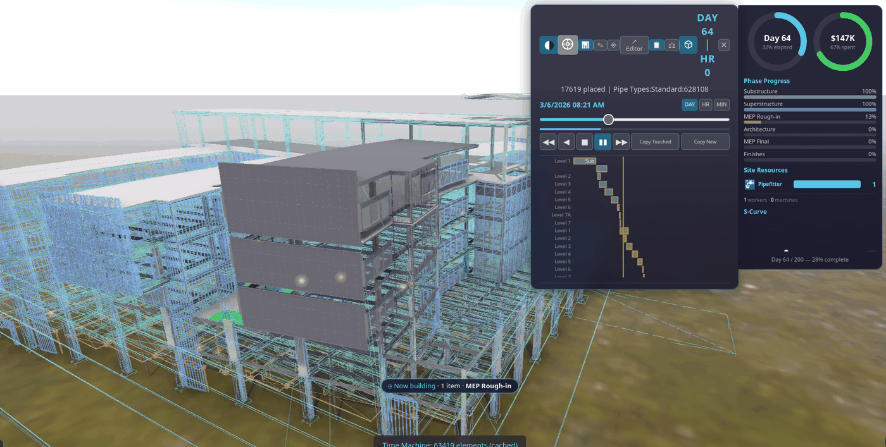

Time Machine — the 4D construction timeline¶
See also: 4D/5D Analysis (the cost/analytics dashboard) · Kernel-ERP User Guide · BIM Viewer Guide
The Time Machine (the clock pill in the viewer, or press t) is where a building's
construction schedule lives — playback, authoring, editing, and the link back into the ERP's
5D cost, all on one signed, IFC-native set of tables. There is no separate scheduling tool
and no re-linking step: a date you drag here is the same fact the 4D playback, the 5D cost roll-up,
and the ERP's Project windows all read.
Reached from either app: open a building in the BIM Viewer (Inspect drawer → Time Machine,
key T), or push a selection into the Kernel-ERP first (› ERP on a Find selection) and
open the same building's Time Machine from there — the ERP-side entry point
picking an element in 3D (or a red Zoom Across pill on an ERP record) jumps the Time Machine
straight to that element's construction moment.
Author the 4D/5D schedule — build it up from the model (LIVE)¶
The Time Machine is not only for playback — it is where you author the construction schedule and its cost, building the 4D/5D up from a bare model. Every edit is written straight into the IFC-native schedule tables the viewer already reads, so the visual gesture and the system-of-record are the same signed rows.
Where the button is — in the viewer:
- Open a building and the Time Machine (the clock pill, or press
t). - On the panel, press
✎(Author 4D Schedule) — the authoring wizard opens.
What you do:
- Generate first draft — folds the model's elements into organized phases (a WBS): Substructure, Superstructure, MEP, Architecture, Finishes — grouped by the same trade rules the Time Machine plays. Every element is assigned to a phase, contiguous dates are laid out, and the 5D cost folds per phase.
- Craft it up — rename a phase, expand it to list its elements (click one to light it in 3D), and reassign an element to a different phase from its dropdown. Because the cost folds from the assignments, moving an element moves its cost between phases — the WBS you author organizes the 5D.
- Tune the dates — the
−5d/+5dsteppers and the Start date lay the phases out; on the gantt you can also drag a bar directly (see Editing the Gantt directly below). - Apply to 4D ▶ — re-folds the Time Machine so the gantt and the playback show your schedule.

Start from nothing. Tick Start blank (set the dates yourself) and the wizard organizes the phases
and assignments but leaves them undated — nothing shows on the timeline until you set a Start and
press Schedule now ▶ to originate the dates yourself. The auto-draft is a suggested start, never
the only path: you can accept it and finish fast, or build the schedule up by hand.

The link between an element and its phase is identity by construction — it survives renaming the phase or the element, where name-matching schedulers would re-bind or break.
Zoom-Across knows where the Time Machine is. When the Time Machine is open and you pinpoint an element (from Find, or a Zoom-Across from a record in the ERP), the timeline jumps to that element's construction moment instead of only lighting it in 3D — the Time Machine consumes the pinpoint. With the Time Machine closed, the pinpoint goes to Find as before (cost/location first).
Playing back a large building — the box-cube LOD toggle (LIVE)¶
On a big model (LTU-scale, 100K+ elements), scrubbing or playing the Time Machine forward keeps every already-built element rendered at full detail forever, even the parts nowhere near your camera — that's real GPU cost paid on every frame for geometry you can't currently see. The box-cube pill trims exactly that, without ever hiding or degrading anything you're actually looking at.
Where the button is:
- Open a building with more than 50,000 elements and open the Time Machine (the clock
pill, or press
t). - A small cube-wireframe pill appears in the panel's header row, next to the Day/Night and Drone-Pilot icons — it only shows up at all on large buildings; smaller ones never need it.
- Click it to turn the proxy on. Click again to go back to today's full-detail rendering.
What it does:
- Anything currently under construction (the active build) or just finished (the short amber "just placed" glow) always renders in full — the toggle never touches those.
- Anything else that's already built stays full detail (LOD400) as long as it's close to the camera and inside your view — so whatever you're actually looking at never loses quality.
- Anything already built that's far away or off to the side of what you're looking at collapses to a lightweight wireframe box in its discipline's colour — the same "not yet detailed" visual language the model already uses while a building is still streaming in.

- Boxes are never pickable as real elements — clicking one does nothing, the same as clicking an ordinary loading placeholder.
- Turning it off is instant and exact: every element goes back to its normal full-detail rendering, nothing about the model itself ever changes — it's a display choice only, made per-session, never saved into the model or the schedule.
What-if schedule — slip a phase, watch the chain re-fold (LIVE)¶
Once a building is folded into a project, you can ask "what if this phase slips?" without touching the real plan.
Where the button is — on the Time Machine (the same hub that owns the 4D/5D):
- Open a building and the Time Machine (the clock pill, or press
t). - Press
⑂(What-if) on the panel.
It works out of the box — you do not even have to push a project first: with no project of your own yet, the
panel opens on the built-in Hospital project (the 7-phase chain below). Push one from the viewer's
Find panel with › ERP and it opens on that one instead.

The project's phases are a finish-to-start chain — each phase starts when the one before it finishes
(that is exactly how the fold laid them out). So when you slip one phase with the − / + steppers,
every downstream phase re-folds with it, in blue, beside the grey official plan:
- Grey bars = the official planned schedule (untouched).
- Blue bars = the what-if — the rippled schedule. Upstream phases (before your slip) stay put; the slipped phase and everything after it shift together.
- The header reads the impact straight off the fold: the new finish date (and the day slip), and how planned value (PV) moves. The budget (BAC) never changes — a slip moves dates, not scope.
Then decide:
- Accept — re-baseline writes the rippled dates back onto the project as the new official plan (and saves it), so the schedule now reflects the slip.
- Discard drops the what-if entirely — the official plan was never touched.
This is the Blue Future branch model applied to the schedule: the what-if lives on a speculative blue branch over the same signed op-log, so it is real (not a mock) yet completely reversible until you accept it. The same engine that unifies a planner, a cost tool, and a 4D/5D viewer onto one log gives you free what-if — no separate scheduling tool, no drift.
Editing the Gantt directly on the Time Machine panel (LIVE)¶
The Time Machine's own Gantt drawer (below the transport row) is a direct-manipulation editor —
the same touch/mouse gestures as arranging shapes in a slide or a drawing tool, applied to schedule
bars. Every gesture writes straight into the same IFC-native tasks / task_sequences tables the
rest of the 4D/5D stack reads, so nothing needs re-linking after an edit.
A lock keeps this deliberate. The drawer opens locked — bars are visible and the timeline still scrubs live, but nothing is draggable. Click the lock icon to unlock editing; the timeline also locks itself automatically while a 4D movie is recording, so a live capture can never be edited out from under itself.
| Gesture | What it does |
|---|---|
| Drag a bar's body | Moves that one task. If the move would overlap a task chained after it, that successor gets pushed later just enough to clear it — dependents never overlap. Nothing upstream is ever touched. |
| Pinch an edge (grab the left/right edge of a bar) | Resizes that one task's duration only — its start (or finish) stays put, the other end moves. |
| Marquee-select (drag from empty canvas across several bars) | Selects a cluster, MS-Word/file-manager style. Drag any selected bar and the whole group moves together by the same amount. Click empty canvas to clear the selection. |
| Drag a bar's link handle onto another bar | Adds a dependency between the two tasks (choose the type — finish-to-start, start-to-start, etc.). A link that would create a loop is refused. |
↺ Undo edit |
Reverts the single most recent edit (drag, resize, link, group-move, or Pull Back — see below), including the elements it retimed. |
⚑ Set Baseline |
Snapshots every task's current dates as the baseline for schedule variance — a different axis from the ERP's own Budget-vs-Actual cost variance. Re-running it overwrites the prior baseline; it does not version it. |
Why a drag only ever pushes, never pulls. Moving one bar earlier could, in principle, let everything chained after it also move earlier — but that would make a single drag silently re-plan the whole downstream programme, which is a much bigger, less predictable action than "move this one task." So a drag stays deliberately narrow: it can only ever push a violated successor later, never pull one earlier. That leaves earlier-availability sitting unclaimed in the schedule whenever a predecessor finishes ahead of where its successor happens to be parked — see Pull Back, next.
⏪ Pull Back — reschedule as early as possible (LIVE)¶
What it's for. Say Foundation finishes Jan 10, and Framing (which only needs Foundation finished) is sitting at Jan 20 — ten days of pure, unclaimed gap, left over from an import or a chain of earlier edits. A drag alone can't close that: you'd have to find every such gap yourself and drag each bar left by hand, one at a time.
What it does. One click on ⏪ Pull Back walks every task in the schedule and pulls each
one to the earliest start its own dependencies actually allow — closing exactly that kind of
gap, across the whole programme, in one pass:
- A task with no predecessors is an anchor — it never moves.
- A task with predecessors moves up to (but never past) the latest date its own predecessor chain requires — the same earliest-start math the critical-path computation already uses, just run forward and applied.
- A task already sitting at its earliest possible date is left alone.
- Nothing is ever moved later. This is a compression action only, the explicit opposite number to a drag's push-only behaviour — it is a deliberate button, not something that happens as a side effect of dragging.
The tooltip reports what happened — e.g. "Compressed N tasks" with the project finish date
pulled forward, or "Nothing to compress — schedule is already at earliest float" if there was no
gap to close. Like every other edit here, it is gated by the same edit lock, undoable with
↺ Undo edit, and survives a reload.
This is not the same kind of action as the row above it. Drag / resize / marquee-group-move are all "you choose what moves and how far." Pull Back is "the tool computes what's allowed to move, and moves all of it" — no selection needed.
Schedule Editor — the advanced Gantt, on its own surface (LIVE)¶
The Time Machine's ✎ wizard, ⑂ what-if, and direct-drag Gantt above are the intuitive
front — quick, visual, one gesture. When you want the serious planner — an expandable WBS,
real dependencies, a critical path, and the same draggable Gantt on a full-page surface — press
↗ Editor on the Time Machine (right beside ✎ Author and ⑂ What-if) to open the Schedule
Editor in its own tab, loaded on the same model. (You can also open it directly at
viewer/schedule_editor.html?db=….) It is a separate, focused surface so the front visual stays light;
both edit the same IFC-native schedule tables, so nothing forks.
![The Schedule Editor on a real SampleHouse — left: the **WBS outline** (Project → Superstructure · Architecture · Finishes, each with its element count and dates); right: the **dependencies** (a finish-to-start chain you author and retype); bottom: the **interactive Gantt**. **Compute CPM** has run — the critical path is red on the rail, in the dependency links, and along the timeline bars, and the header reads *project 90d · critical 3/3*. Drag a bar to reschedule; drag its ▸ handle onto another bar to link.](../figs/sched_editor_gantt.png)
What it does, and how it earns each step:
- Expandable WBS outline — the phases you authored render as a collapsible tree, each leaf showing its element count and dates.
- View & edit dependencies — add a link between two phases, choose its type (FS / SS / FF / SF),
set a lag, or delete it. The graph is written to the IFC-native
task_sequencestable; a link that would create a cycle is refused (a schedule cannot loop). - Compute CPM — a real critical-path forward/backward pass over the dependency graph computes each task's early/late dates, total & free float, and which tasks are critical. The critical path lights up red across the outline, the links, and the bars; the readout shows the project duration and how many tasks are critical. (Editing the graph after a run clears the result until you recompute, so a stale critical path is never shown.)
- Interactive Gantt — drag a bar to reschedule it (snapped to whole days, duration preserved); drag the ▸ handle from one bar onto another to link them. This is the MS-Project gesture, on your signed schedule.
Live across tabs. Every edit is a signed op broadcast on one channel, so a second open surface re-folds it live — drag a bar in the editor and a Time Machine (or a second editor) open on the same model updates immediately, because both are folds of the same log. This is the difference from the field: open-source 4D (Bonsai) can build a schedule and run CPM but its Gantt is a generated picture you edit through side panels; MS Project gives you the interactive Gantt but has no model, no cost, and no ERP. The Schedule Editor is a real drag-on-the-chart editor on one signed op-log that the model, the 4D playback, the 5D cost, and the ERP all fold from — so a date you drag here is the same fact the enterprise reads.
Where it stops — on purpose. The editor computes from the graph you author; it never auto-reschedules or "levels" resources for you. Automatic schedule optimisation is a decades-deep rabbit hole and a place for drift; the line here is deliberate — deterministic compute, your plan.
Import a Primavera / MS Project programme — adopt an existing plan (LIVE: P6)¶
You don't have to author from scratch. If the schedule already lives in Primavera P6 or MS
Project, bring it in: in the Schedule Editor press ⤓ Import P6, pick the export file, and its
WBS, dependencies and dates land straight into the same IFC-native tables the rest of the 4D/5D
stack reads. The imported plan immediately gets the expandable WBS, the FS/SS/FF/SF dependency
editor, Compute CPM, the drag-Gantt, What-if and the 5D cost fold — nothing special-cased.
How the two worlds meet. The 3D model comes from Autodesk (Revit/Navisworks → IFC → the BIM Viewer). The programme comes from Primavera / MS Project. The importer is a thin reader that turns either side's export into our one signed schedule — and the two are stitched together by binding:

The formats — each is a separate reader behind one mapper, so the result is identical whichever you feed in:
| Source | File | Status |
|---|---|---|
| Primavera P6 | .xer (the interchange planners email around) |
LIVE |
| Primavera P6 | .xml — P6 XML / PMXML (the open, structured export) |
LIVE |
| MS Project | .xml — MSPDI (Project's XML export) |
LIVE |
(Both .xml flavours are auto-detected by content — you don't pick the format, just the file.)
The honest boundary — why import isn't yet 4D. A P6 or MS Project file carries the plan (tasks,
logic, dates) but no model geometry — it has activity codes, not your building's element GUIDs. So a
freshly imported schedule is a real, editable, CPM-computable programme, but its tasks aren't yet tied to
anything you can see. You make it 4D by binding: in the ✎ wizard you assign each task the
elements it builds (rename-proof — the link survives a model re-export). Once bound, the 5D cost folds up
from the assigned elements and the Time Machine scrubs the model along your imported dates. This binding
step is exactly the thing a P6 reporting tool cannot do — it has no model to bind to.
Auto-bind by convention — skip the manual first pass. Because the planner controls the activity name in P6/MS Project, they can write the binding into the file as a short token appended to the name:
@<discipline>:<IfcClass>[|<IfcClass>…][:<storey>]
For example Columns @STR:IfcColumn, Structural Framing @STR:IfcMember|IfcBeam, or
Internal Finishes @ARC:IfcCovering:Level 3. On import, tick “auto-bind by convention” (next to the
⤓ Import P6 button) and the importer parses each token off the name (the WBS still shows the clean
label, e.g. Columns), resolves it against your model — all elements whose discipline/IfcClass/storey
match — and pre-binds the task. You get a reviewable first pass instead of clicking every task. It is
coarse on purpose: @STR:IfcColumn binds all columns to one task; refine to per-level sub-tasks with
break-down by storey in the editor. Two honest constraints make this safe, not a guess: the token is a
declared predicate we execute — not an embedded GUID (which would rot the moment the model is
re-exported) and not a fuzzy name match (which guesses). A selector survives a re-export where a baked
GUID list would bind nothing; anything a selector can’t resolve is reported (“N selector(s) matched
nothing — review”), never silently dropped. The pre-bind is the same signed, rename-proof task_elements
link as a manual bind — you can adjust or clear it per task.
Demo files (self-binding). Alongside the plain demo programmes, the tokened variants
tests/fixtures/Hospital_GW_Programme.bound.xer/.bound.xmlcarry the@disc:classtokens, so the import is self-binding with the checkbox on — no sidecar needed.Demo files. The same ready GW-Hospital programme ships in all three formats —
tests/fixtures/Hospital_GW_Programme.xer(P6 XER),…/Hospital_GW_Programme.xml(P6 PMXML) and…/Hospital_GW_MSProject.xml(MS Project MSPDI) — so you can try the import end-to-end on the sample model. Every format maps to the same rows, CPM reproduces the plan's 300-day critical path exactly, and 525 real elements bind and fold to 5D cost.
Does it survive a real P6 file? The Hospital demo above is ours — useful to learn the flow, but it
can't prove fidelity against quirks only a real export carries (a tool can't grade its own homework). So
the import is also verified against a genuinely Primavera-emitted .xer (a public, cited sample, 52
tasks / 61 links). The result: every record parses with zero unmapped links and zero dangling
references, and our critical path
exactly matches P6's own (driving_path_flag, 52/52). The one honest gap: the imported dates land a
few days early on long chains because we count calendar days while P6 follows a working calendar
(skipping weekends/holidays). We report that offset rather than hide it — it's a smaller, named gap
than before, and modelling the working calendar is a clean follow-up for a later project.